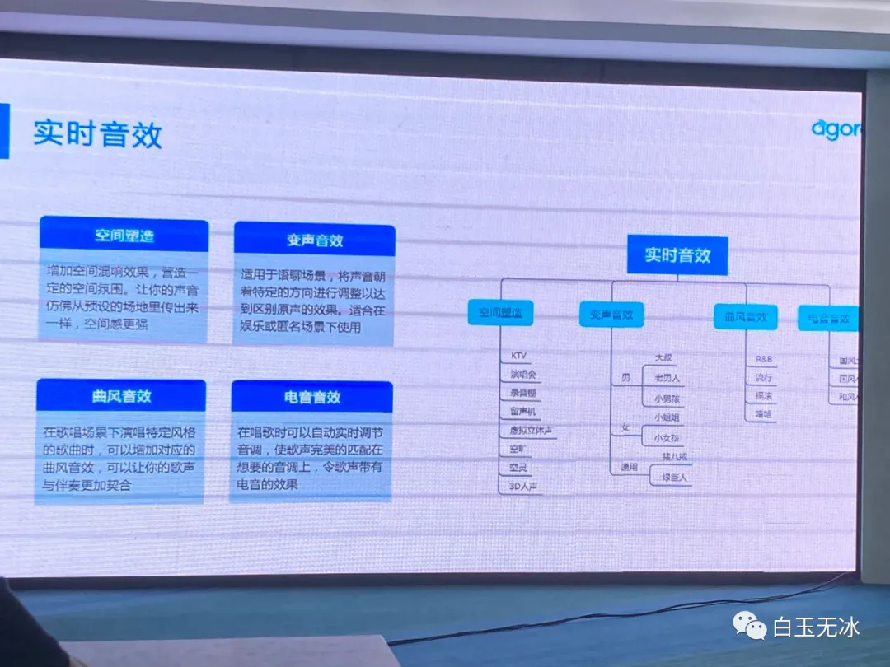
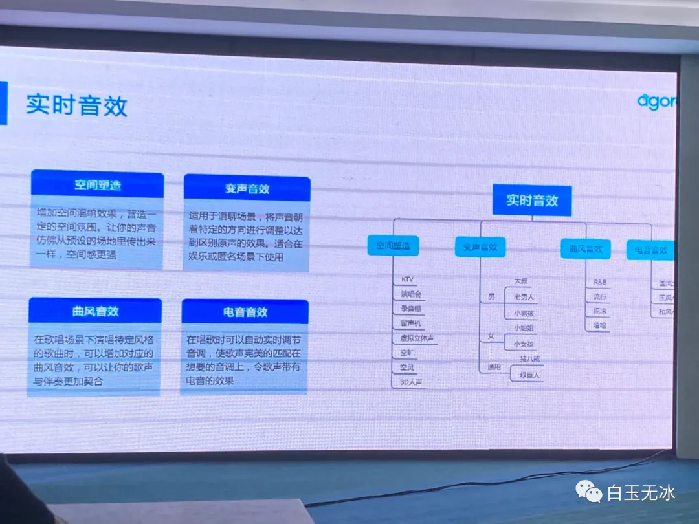
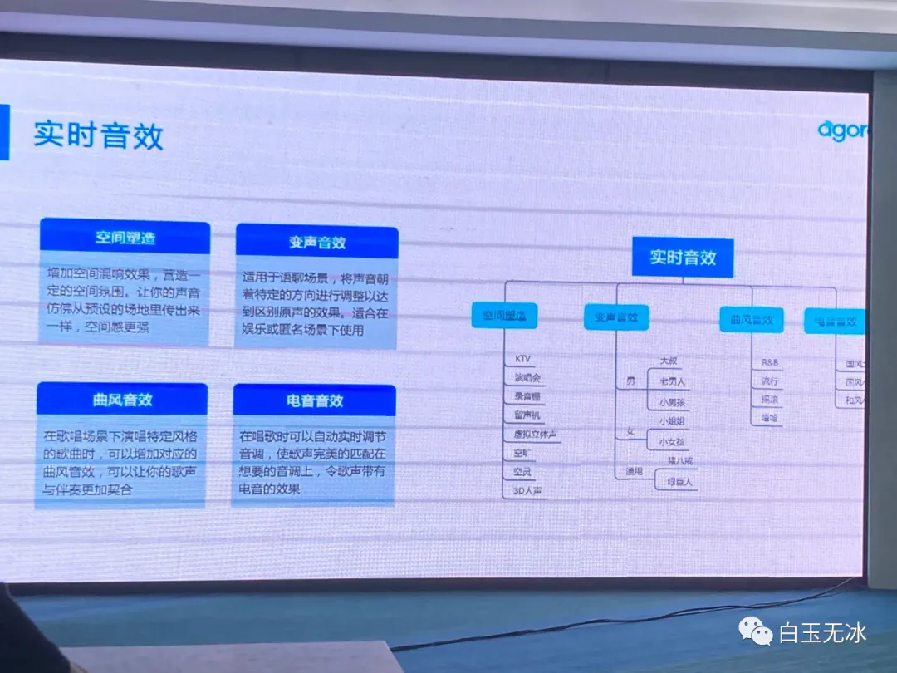

Introduction
《Cocos Creator 3D v1.2 一探究竟》 刘雅琼 Cocos引擎开发工程师兼任布道师
《Cocos Creator 引擎规划路线前瞻》 Panda Cocos引擎技术总监
《插件系统&自定义构建流程》 严媛媛 Cocos引擎编辑器开发工程师
《RTE在游戏场景中的演进》 申庆杰 Agroa游戏产品经理
《V8与JS引擎浅析》 赵铮雄 Cocos高级咨询顾问
开发者问答
Published with GitBook
《RTE在游戏场景中的演进》 申庆杰 Agroa游戏产品经理
RTE在游戏场景中的演进

results matching "
"
No results matching "
"


 
